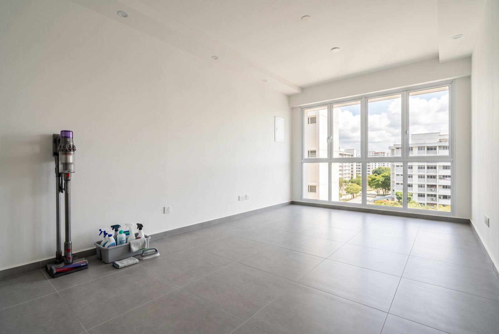

Move-in cleaning for BTO & resale flats: what a proper deep clean covers

Booking move in cleaning in Singapore? For a typical ~700 sqft BTO or resale unit, a whole-unit deep clean runs around S$400–500, done after your contractor hands over and before any furniture arrives. This is not a mop-and-wipe: post renovation cleaning for a BTO or resale flat has to deal with fine cement and gypsum dust that keeps resettling for weeks, plus grout haze, paint splatter and residue inside cabinets and aircon units. Here's what a proper deep cleaning before moving in actually covers, when a chemical wash after renovation makes sense, and roughly what it costs in 2026.
Why renovation dust is not normal dust
The dust a renovation leaves behind is mostly fine cement, gypsum and plaster particles from hacking, screeding, plastering and sanding. Two things make it different from household dust:
- It stays airborne and resettles for weeks. You can wipe every surface on Saturday and find a fresh grey film by the following weekend. That's why one quick clean straight after handover never feels finished.
- It gets everywhere air moves. Inside kitchen cabinets and wardrobes, into aircon fan coils and filters, along the tops of door frames, into window tracks and service-yard grilles. Run the aircon before those filters are cleaned and you blow the dust straight back into the room.
A regular mop just pushes cement dust around and leaves a haze on tiles. Proper post-reno cleaning works top-down — ceiling fixtures first, floors last — with vacuuming, repeated damp wipe-downs and a final floor wash, so the dust actually leaves the flat instead of relocating. Singapore's NEA guidance on indoor air quality is blunt about fine dust: the less of it circulating in a closed, air-conditioned flat, the better.
BTO, resale or post-reno: which clean do you need?
"Move-in cleaning" covers three fairly different jobs. Knowing which one you're booking keeps the quote honest.
New BTO, no renovation yet
A flat fresh from HDB key collection mainly needs construction dust, protective film residue and sticker marks removed, plus a wash-down of toilets and the kitchen. It's the lightest of the three — but still worth doing before defect-checking, because dust hides scratches and hairline cracks you'll want to log.
Resale flat takeover
Here the enemy is the previous owner's history, not construction: kitchen grease, toilet limescale and mould, dust behind where furniture stood for years, and whatever lives in the window tracks. A takeover clean leans on degreasing and descaling rather than dust control.
Post-renovation deep clean
The heaviest job, and the one most people actually mean. Whether the flat is BTO or resale, once contractors have hacked, tiled and painted, you're dealing with cement dust, grout haze, silicone smears and paint splatter on top of everything above. This is the version the rest of this guide describes.
What a proper deep clean covers, room by room
If a quote just says "general cleaning", ask for the scope in writing. A genuine move-in deep clean should include:
- Whole flat: ceiling corners, light fittings and fan blades; tops of door frames and cabinets; all doors, handles and switches wiped; every floor vacuumed then washed.
- Kitchen: inside and outside all cabinets and drawers (this is where gypsum dust loves to settle), countertop and backsplash degreased, sink and tap descaled, hood and hob exterior cleaned.
- Bathrooms: tiles and grout scrubbed, shower screen descaled, WC and basin disinfected, floor trap cleared of debris, silicone lines wiped down.
- Bedrooms: inside wardrobes and built-ins, window ledges, aircon unit exteriors, skirting and vinyl or tile floors.
- Windows and grilles: interior glass, frames, tracks and grilles — tracks especially, because cement dust cakes in them and jams rollers.
- Aircon filters: filters and front panels of every fan-coil unit washed, so the first time you run the aircon it isn't redistributing renovation dust.
- Floor chemical wash (where suitable): for tiled floors, an acid-based wash dissolves cement residue and grout haze that mopping cannot lift. It is not for vinyl, laminate or natural stone — those need pH-neutral methods, which is why the cleaner should ask what your flooring is before quoting.
Moving out of your current place at the same time? The scope overlaps heavily with our move-out cleaning checklist for HDB flats, and tenants ending a lease should read the end-of-tenancy reinstatement guide — landlords check the same surfaces.
What move-in cleaning costs in Singapore (2026)
Pricing is by unit size and dust level, not by hour. As a reference point, a recent RK E&C post-reno deep clean of a ~700 sqft condo unit was S$500 before discount. Typical ranges:
| Job | Indicative price (SGD) | Notes |
|---|---|---|
| Whole-unit deep clean, ~700 sqft (2–3 room) | S$400 – S$500 | Post-reno dust level affects the quote |
| Whole-unit deep clean, 4–5 room / larger condo | S$500 and up | Scales with floor area and rooms |
| Aircon filter & panel cleaning | ~S$25 per unit | Done in the same visit; full servicing quoted separately |
| Floor chemical wash | Quote by area | Tiled floors only — not vinyl, laminate or stone |
| Touch-up paint & minor fixes during the clean | Quote on site | Only possible with a reno-and-cleaning team |
If your aircon needs more than a filter wash — weak cooling, musty smell, dripping — see our separate guide to aircon servicing costs in Singapore for what a proper chemical service involves.
When to schedule it
- After contractor handover. Wait until every trade is finished and touch-ups are done. A deep clean before the final trade visit is money burned — the drilling and sanding start the dust cycle again.
- Before furniture and boxes arrive. An empty flat lets cleaners reach every wall, corner and cabinet interior. Furniture placed on top of settled dust traps it underneath for years.
- Allow for resettling. Because fine dust keeps falling out of the air for a couple of weeks after works end, a light second wipe-down 1–2 weeks later is a sensible add-on if your timeline allows.
The one-team advantage: cleaning plus fixing in one visit
Here's what a cleaning-only crew cannot do: when the deep clean uncovers a paint scuff behind where the protective sheet was taped, a silicone bead that shrank, a cabinet hinge out of alignment or a scratch on the wall from furniture delivery — they photograph it and leave. You then chase your contractor back for a separate appointment, or live with it.
RK E&C is a renovation and handyman company that also does move-in cleaning, so the same visit can include touch-up painting, silicone re-sealing, door and hinge adjustments, and minor repairs alongside the clean. The flat is handed to you actually finished — cleaned and corrected — instead of clean-but-flawed. For anything bigger the crew spots, our full renovation and handyman services cover it under the same roof.
Send us your floor plan or postal code and a few photos of the flat's current state on WhatsApp, and we'll give you a fixed quote — usually the same day. Or browse the rest of our guides if you're still planning the move.
Frequently asked questions
How much does move-in cleaning cost in Singapore?
Around S$400–500 for a ~700 sqft unit, more for larger flats, plus about S$25 per aircon unit for filter cleaning in the same visit. Prices are indicative; the fixed quote depends on size, dust level and whether a chemical wash is included.
Why can't I just mop the flat myself after renovation?
Cement and gypsum dust is too fine for a mop — it smears into a haze and keeps resettling for weeks, and it hides inside cabinets, window tracks and aircon coils. A post-reno clean works top-down with repeated passes and fine-filter vacuuming, which is a different job from weekly housekeeping.
When should the clean happen — before or after furniture arrives?
After full contractor handover, before any furniture or boxes. An empty flat is the only time every surface is reachable, and furniture placed over settled dust simply traps it.
Is a chemical wash necessary for the floor?
For tiled floors after renovation, usually yes — it dissolves cement residue and grout haze mopping can't lift. It's unsuitable for vinyl, laminate and natural stone, so confirm your floor type is assessed before anyone quotes it.
Do BTO and resale flats need different cleans?
Yes. New BTOs mainly need construction dust and film residue removed; resale flats need degreasing and descaling from years of occupancy. A freshly renovated flat of either type needs the heaviest post-reno version.
Can you fix defects or touch up paint during the cleaning visit?
Yes — because RK E&C is a renovation company, the same crew can patch paint, re-seal silicone and adjust doors while cleaning. A cleaning-only outfit has to leave those for another contractor.
Keys collected, reno done, dust everywhere?
One team, one visit: deep clean, aircon filters, touch-up paint and minor fixes — fixed price before we start, island-wide.
Prices are indicative of the Singapore market in 2026 and not a quotation. Confirm a fixed price with your provider before work begins.